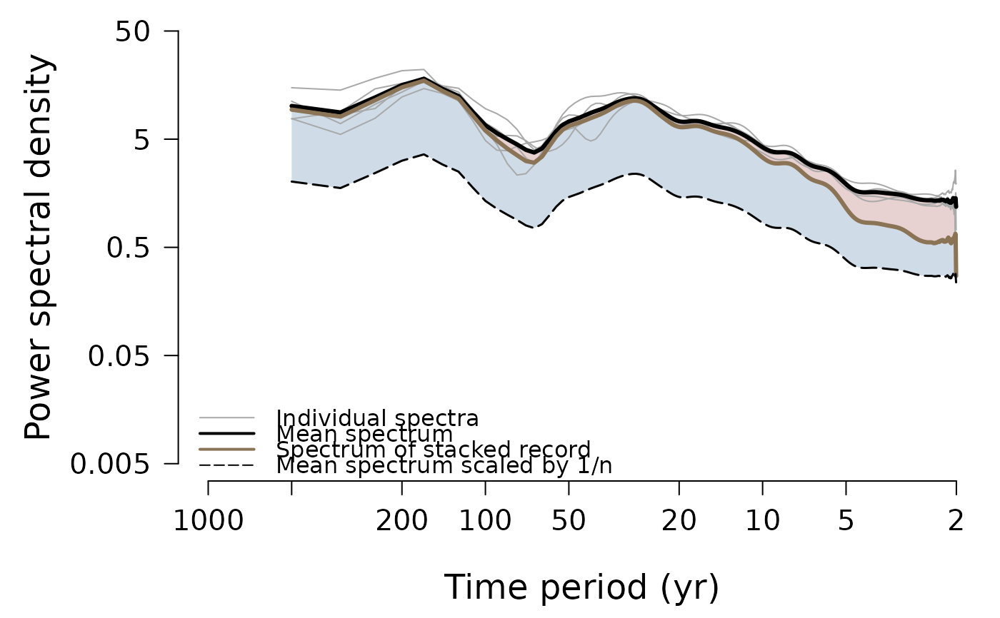
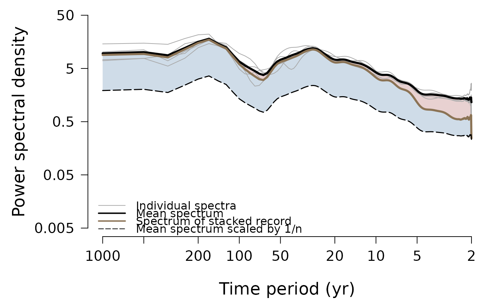

Plot the spectral estimates from a spatial proxy record array (e.g., as in the firn core analysis of Münch and Laepple, 2018, Fig. 1).
Arguments
- spec
output from
ObtainArraySpectra.- marker
vector of optional frequency values to mark certain parts of the plot, e.g. a cutoff frequency, in form of vertical grey dashed lines.
- remove
number of frequency estimates to omit (to remove values potentially biased from detrending or smoothing): either a single integer to omit an equal number on both sides, or a length-two vector supplying the number of estimates to omit on the low-frequency side and on the high-frequency side.
- xlim
the x limits (x1, x2) of the plot.
- ylim
the y limits (y1, y2) of the plot.
- col
a three-element vector with the colours for the individual spectra (
col[1]), the mean (col[2]) and the stack spectrum (col[3]).- col.sn
a two-element vector with the colours for the approximate signal (
col[1]) and noise shading (col[2]).- alpha.sn
opacity factor for the colours in
col.snwithin [0,1].- xlab
x axis label.
- ylab
y axis label.
- xtm
x axis tick mark positions; if
NULLcomputed byaxis.- ytm
y axis tick mark positions; if
NULLcomputed from theylimrange in steps of powers of 10.- xtl
x axis tick mark labels; if
NULLdetermined automatically fromxtm, else it must be a vector of labels of the same length asxtm.- ytl
equivalent to
xtlfor the y axis tick mark labels.
References
Münch, T. and Laepple, T.: What climate signal is contained in decadal- to centennial-scale isotope variations from Antarctic ice cores? Clim. Past, 14, 2053–2070, https://doi.org/10.5194/cp-14-2053-2018, 2018.
Examples
library(magrittr)
# create artificial proxy data as a showcase dataset
nc <- 5
nt <- 1000
clim <- as.numeric(stats::arima.sim(model = list(ar = 0.7), n = nt))
noise <- as.data.frame(replicate(nc, rnorm(n = nt)))
# array of five "cores" recording the same climate but independent noise:
cores <- clim + noise
# obtain the spectra and plot them
cores %>%
ObtainArraySpectra(df.log = 0.05) %>%
PlotArraySpectra(xlim = c(1000, 2))

# do not omit any values on the plot
cores %>%
ObtainArraySpectra(df.log = 0.05) %>%
PlotArraySpectra(remove = 0, xlim = c(1000, 2))
